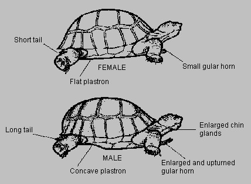

Tuesday, February the 17th, 2009
back to: title, date or indexes
The 2008 Hooting Yard On The Air Christmas Special, a reading of A Portrait Of A Tortoise, Sylvia Townsend Warner's selected extracts from the Journals of Gilbert White, is now available as a podcast. Go here, click, listen, be awed.
Obsessives may wish to read these brief Hooting Yard posts first.
